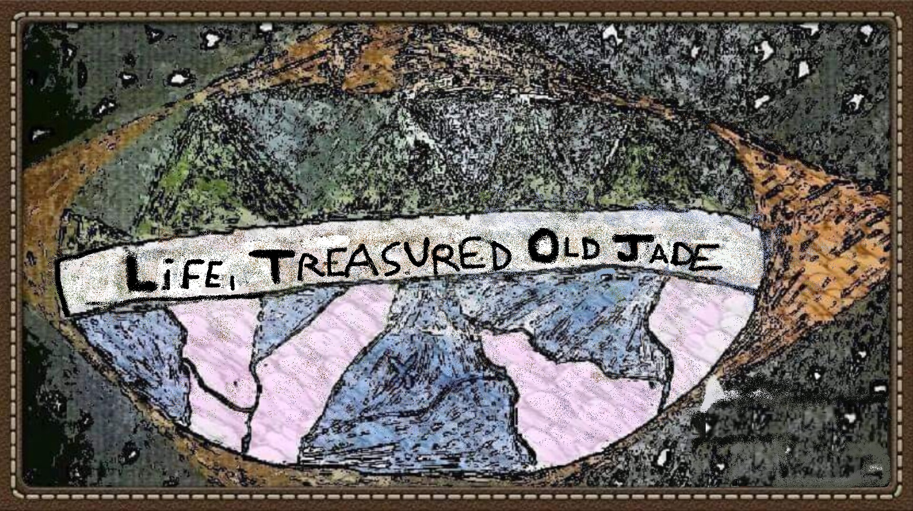

Lifetoja
Desenvolvimento Humano, Social e Tecnológico
A Lifetoja é uma instituição dedicada à promoção do desenvolvimento humano, social e tecnológico de forma saudável, sustentável e contínua. Seu propósito é contribuir para a melhoria da experiência humana por meio da reflexão, ação e colaboração.
Essa iniciativa se desenvolve de maneira orgânica e progressiva, impulsionada por indivíduos que, de forma consciente ou não, buscam viver com profundidade, excelência e propósito. Esses esforços individuais, ainda que dispersos, compartilham um mesmo impulso essencial de aprimoramento, inerente à condição humana.
Em diferentes partes do mundo, há pessoas movidas por um mesmo anseio: o aperfeiçoamento da vida. A Lifetoja atua como um ponto de convergência entre essas trajetórias, reunindo e fortalecendo iniciativas voltadas à evolução pessoal e coletiva, dentro de um ecossistema de desenvolvimento integral.
Não se trata de um empreendimento convencional com objetivos limitados no tempo. A Lifetoja é uma organização que representa um movimento contínuo de busca por excelência, pautado por valores universais e guiado por ações práticas voltadas à transformação da realidade.
A Lifetoja é uma das diversas expressões de uma força discreta, porém constante, que atravessa a história da civilização humana: o desejo de evoluir. Essa força conduz, geração após geração, um processo de aprimoramento gradual e profundo — um movimento essencial à própria vida, que é, por sua natureza, uma joia antiga e preciosa.
